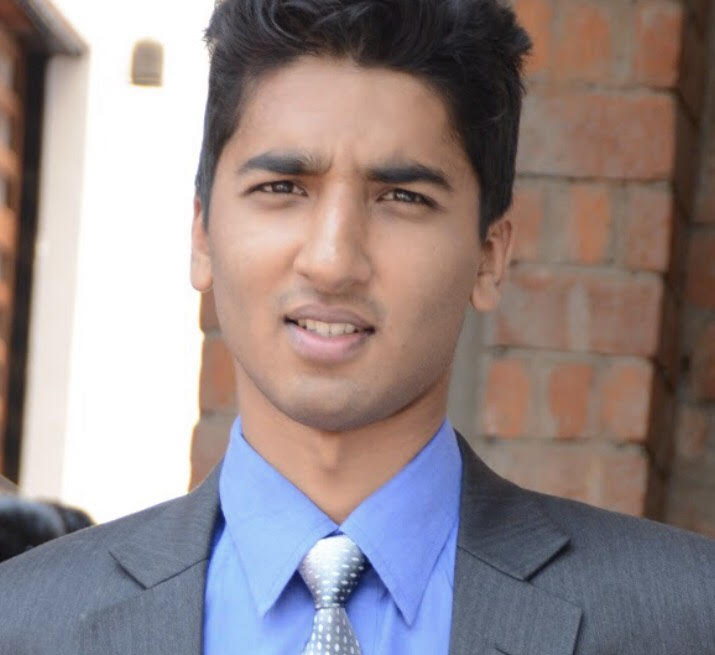

Members of this group:
|
Manoj is a third-year Ph.D. student in the Chester F. Carlson Center for Imaging Science at Rochester Institute of Technology. His advisor is Prof. Christopher Kanan who directs the Machine and Neuromorphic Perception Laboratory. His research interests lie at the intersection of Natural language and Computer Vision. Manoj's dissertation work concentrates on understanding concepts in images grounded to natural language and build robust vision-language models. Technical Interests: Visual Question Answering, Image Understanding, Natural Language Processing, Machine Learning. |
|  |
Aayush is a 3rd year Ph.D. student at the Chester F. Carlson Center for Imaging Science, Rochester Institute of Technology (RIT). His Ph.D. works with Prof. Jeff Pelz aims in developing methods and algorithms for eye tracking and understanding small eye movements. Technical Interests: Image Understanding, Object Tracking, Human-Computer Interaction, Machine Learning, Color Vision, Human Vision, Psychophysics Experimental Design. |
|
Shusil is a fifth-year Ph.D. student in Image Science at the College of Image Science, Rochester Institute of Technology (RIT) under the advisement of Prof. Christopher Linte. Technical Interests: Image Segmentation, Image Understanding, Machine Learning. |
|
Prashnna is a third-year Ph.D. student in Computing and Information Science at the Golisano College of Computing and Information Science, Rochester Institute of Technology (RIT) under the advisement of Prof. Linwei Wang. He is interested in deep representation learning for disentangling generative factors within the data, with an application focus in learning inter-subject variations in clinical tasks. Technical Interests: Machine Learning, Deep generative models, Disentangled representations, Medical Imaging. |
|
Sandesh is a fourth-year Ph.D. student in Computing and Information Science at the Golisano College of Computing and Information Science, Rochester Institute of Technology (RIT) under the advisement of Prof. Linwei Wang. He is interested in both theoretical machine learning and its practical application to medical imaging and inverse problems. His Ph.D. dissertation work aims to understand uncertainty and generalization of deep networks while applying them to inverse problems of medical imaging. Technical Interests: Machine Learning, Bayesian Reasoning, Generative Modeling and Representation, Medical Imaging, Inverse Problems. |
|
Sushant is a fourth-year Ph.D. student in Computing and Information Science at the Golisano College of Computing and Information Science, Rochester Institute of Technology (RIT) under the advisement of Prof. Matt Huenerfauth. He is interested in applying machine learning concepts to make information more accessible to everyone. His Ph.D. dissertation work aims to inform the design and the evaluation of Automatic Speech Recognition (ASR) technology for use in captioning for people who are deaf or hard of hearing (DHH). Technical Interests: Natural Language Processing, Human-Computer Interaction, Speech Processing, Machine Learning. |
|
Kishan is a third-year Ph.D. student in Computing and Information Science at the Golisano College of Computing and Information Science, Rochester Institute of Technology (RIT) under the advisement of Prof. Anne Haake and Prof. Rui Li. His research interests lie at the intersection of machine learning and network science, with a current emphasis on graph representation learning and graph neural networks and their application to computational biology. His Ph.D. dissertation work aims to design and develop machine learning models that can reason about the complex, interconnected mechanism of genetic interactions. Technical Interests: Graph Representation Learning, Graph Neural Network, Machine Learning, Computational Biology. |